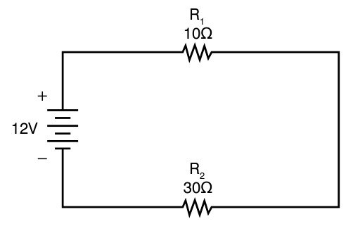

Path
Pathsone
Currentthe same at every point
Two readings differlook for a second path
The flight crew reports a dim landing light. You install a new lamp and check that the circuit breaker has not opened. With the light on, you measure 28 V at the bus but only 22.3 V across the lamp.
Measured at the bus with the light on.
Measured across the new lamp. It is 5.7 V less than the bus.
The lamp shares one path with the circuit breaker, the switch, a connector, the wiring and the ground, so the other 5.7 V is being dropped across one of those parts. Finding which part starts with one idea: in a series circuit, every part is on the same single path.
A metal bar that is the common point where electrical power is shared out to the circuits. The circuit breakers take their power from it.
A switch that opens by itself when the current is too high, to protect the wire. A fuse does the same job by melting open, and it must be replaced. A circuit breaker can be reset by hand, but only after the fault that tripped it has been found and fixed.
When you finish this sample you can do the two things below. The check at the end asks about each of them.
In the Ohm’s Law lesson, you worked with one load, the part that does the work, on one source. This lesson uses the same law on circuits with more than one load. The question below uses a single load.
A 9 V source is connected across a single 20 ohm load. What current flows?
Series circuits have only one path for current to flow. Start at the source, trace through each part in turn, and you come back to the source without reaching a branch, a point where the path splits into two or more paths.
A circuit with only one path for current. The parts are connected end to end, so the same current flows through each one.

The path goes from the source, through R1, through R2 and back to the source. There is one path and no branch, so this is a series circuit.
Two questions on what this sample taught. The feedback for each answer pops up over the question.
Which drawing shows a series circuit?
A 28 V bus feeds a lamp through a circuit breaker, a switch and a wire. An ammeter between the circuit breaker and the switch reads 2.4 A. What does an ammeter in the return wire, after the lamp, read?
Path
Tracing
Sources: FAA Aviation Maintenance Technician Handbook, General (FAA-H-8083-30B), Chapter 12.